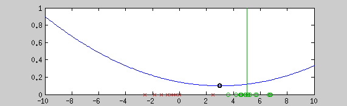
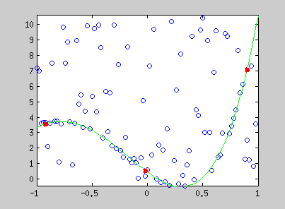
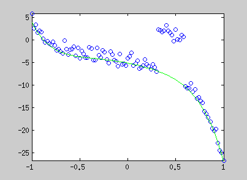
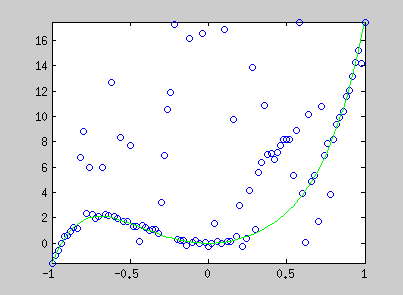
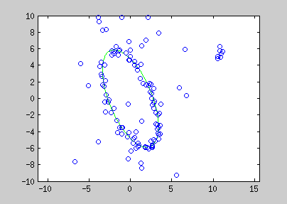
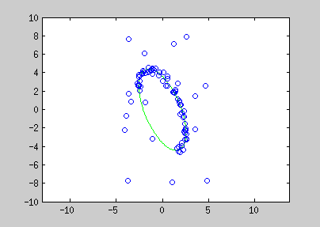

Graduated Non-Convexity for Robust Fitting
Reaching a useful minimum of a non-convex robust estimator, one step at a time.

Introduction
Many problems have a non-convex energy, so reaching the global minimum in finite time is not guaranteed. Non-convex functions are common in robust estimation — estimating variables under non-Gaussian noise. Graduated non-convexity (GNC) is a generic way to reach an interesting minimum when a robust estimator is needed.
Generic approach for robust linear fitting
For many problems we seek the model parameters of a probability function that maximize it over paired training examples and :
where is linearly related to through :
is the perturbation from the noise distribution. Assuming Gaussian noise gives the familiar least-squares problem (the negative log of the pdf) — but that is very sensitive to outliers. The fix is to use a robust estimator instead of the normal distribution.
Graduated non-convexity approach
A robust estimator's cost is usually non-convex, so the global minimum cannot be computed in finite time. To reach a useful local minimum, GNC starts from a convex estimator (the normal, say) and gradually reshapes the cost function until it becomes a robust enough estimator to fit the target distribution as well as possible.
Example — robust polynomial and conic estimation
Polynomial coefficient estimation by graduated non-convexity. Blue lines are the iterated steps, green is the ground truth. Points are coloured by the derivative of the current estimator's cost — red: near one, blue: near zero. Red points are constraints added with a Lagrange multiplier.



The conic equation can be written as an explicit least-squares form, so it can be optimized the same way:

